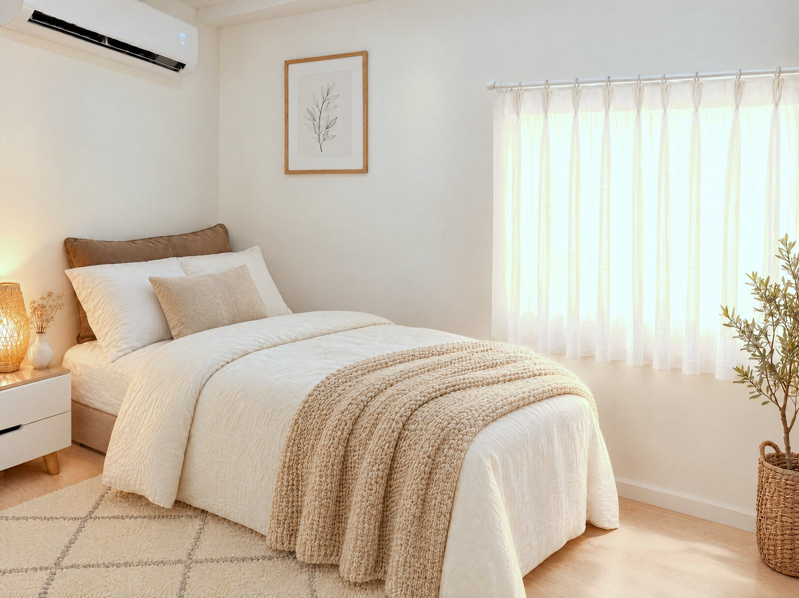
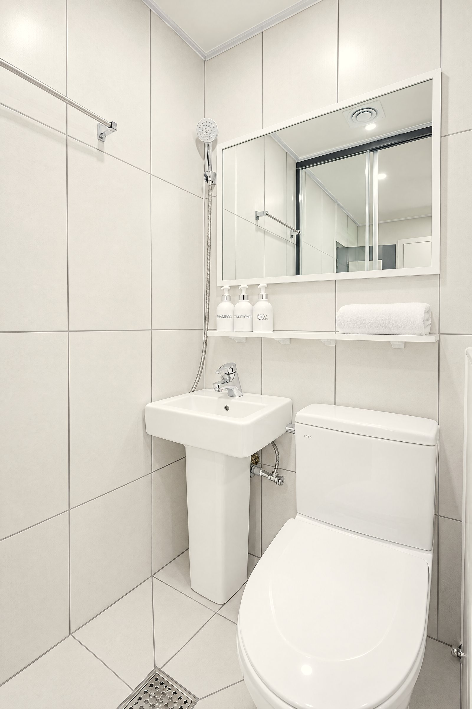
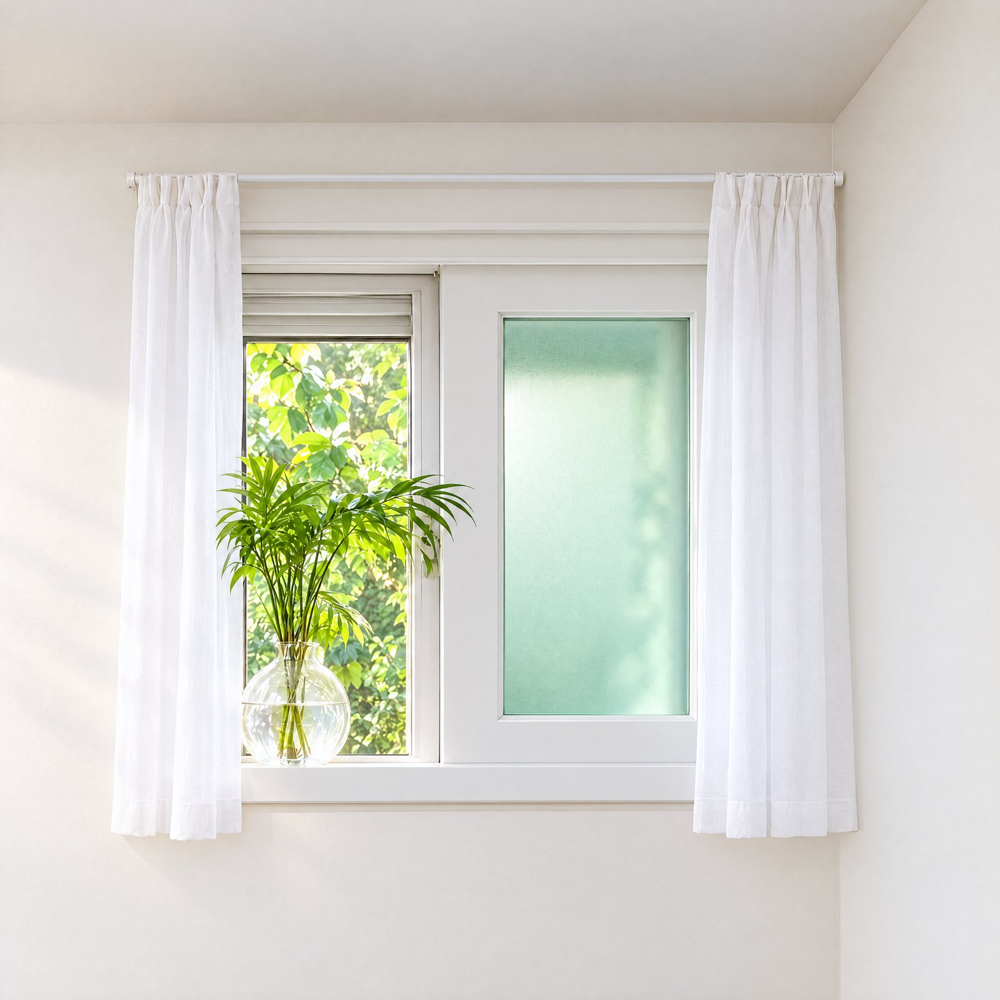
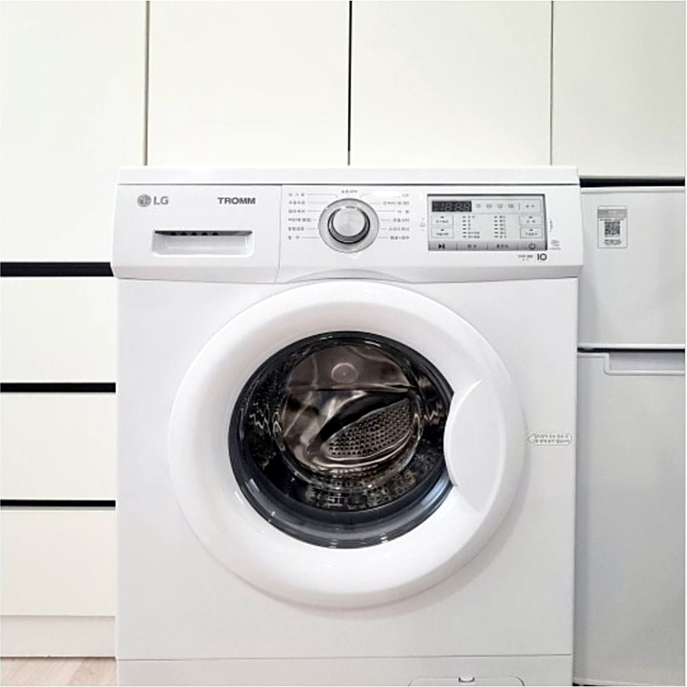
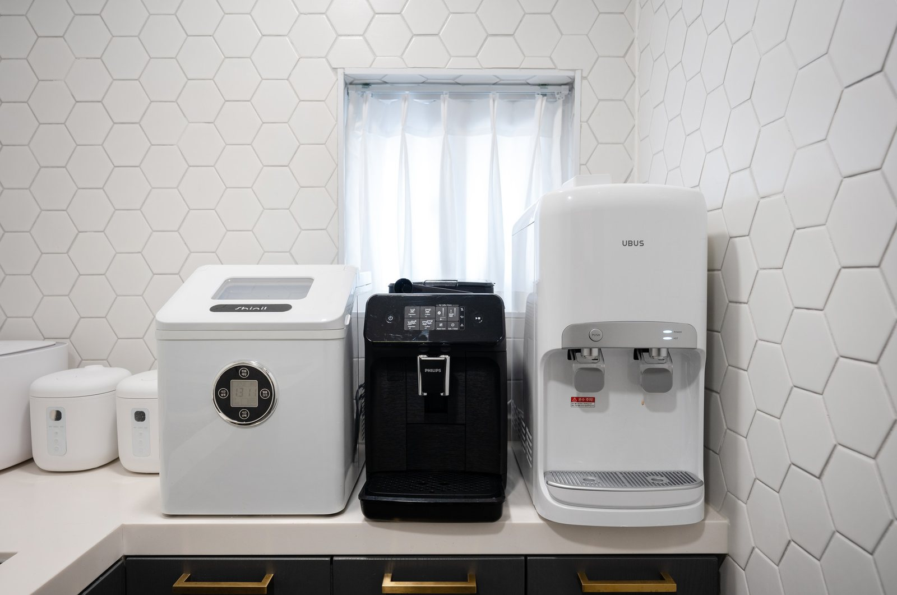

안양역 원룸텔·고시원,
고를 때 꼭 확인할 5가지
안양역 주변에는 원룸텔과 고시원이 많아서, 월세 숫자만 비교하다 보면 정작 살면서 불편한 점을 놓치기 쉬워요. 방을 보러 가기 전에 아래 다섯 가지만 확인해 보세요.

1월세에 관리비가 포함돼 있나요?
같은 60만원이라도 관리비가 따로 붙으면 실제로 내는 돈이 달라져요. 월 몇만 원씩 관리비를 따로 받는 곳도 있고, 전기·가스 요금을 사용량대로 더 받는 곳도 있어요.
- 전기·가스·수도·인터넷이 월세에 포함되는지
- 퇴실할 때 청소비 같은 추가 비용이 있는지
- 보증금은 언제, 얼마나 돌려받는지
월세에 전기·가스·수도·인터넷이 모두 포함돼 있어요. 따로 드는 비용은 퇴실 청소비 3만원뿐이고, 보증금 20만원은 퇴실할 때 돌려드려요.
2방 안에 욕실이 있나요?
고시원·원룸텔은 방 구조가 크게 세 가지예요. 겉보기 가격이 싸면 대부분 욕실을 함께 쓰는 방이에요.
| 방 종류 | 샤워실 | 화장실 |
|---|---|---|
| 미니룸 | 공용 | 공용 |
| 샤워룸 | 방 안 | 공용 |
| 원룸형 | 방 안 | 방 안 |
모든 방이 원룸형이에요. 샤워실과 화장실이 방 안에 있어서 아침마다 줄을 설 일이 없어요.

3바깥으로 난 창문이 있나요?
창문이 복도 쪽으로 난 '내창'과 바깥으로 난 '외창'은 생활의 질이 꽤 달라요. 외창이 있어야 햇빛이 들고 환기가 잘 되고, 곰팡이와 냄새 걱정도 줄어요.
모든 방에 바깥으로 난 이중창이 있고, 방마다 환기 덕트도 따로 있어요.

4빨래는 어디서 하나요?
공용 세탁기 한두 대를 여러 명이 나눠 쓰면 주말마다 기다려야 하고, 남의 빨래를 꺼내야 하는 일도 생겨요. 직접 살아 보면 생각보다 큰 차이예요.
방마다 LG 드럼세탁기가 있어요. 빨래는 방에서 하고, 공용공간의 대용량 건조기는 무료로 24시간 쓸 수 있어요.

5계약 조건은 어떤가요?
- 최소 몇 개월부터 계약할 수 있는지
- 중개수수료가 있는지
- 주소 이전(전입신고)이 되는지
보증금 20만원, 최소 2개월부터 계약하고 이후 1개월씩 연장할 수 있어요. 중개수수료는 없어요.
그 밖에 함께 보면 좋은 것
- 보안 — 층별 현관과 방문 도어락으로 두 번 잠기는지, 공용구역 CCTV가 있는지
- 공용 주방 — 24시간 쓸 수 있는지, 식기·밥솥·정수기가 있는지
- 귀갓길 — 역에서 오는 길이 밝은지, 직접 걸어 보기
